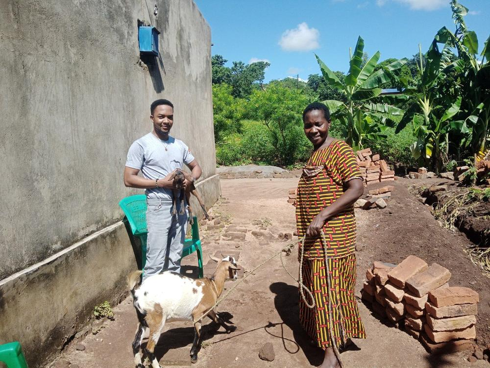
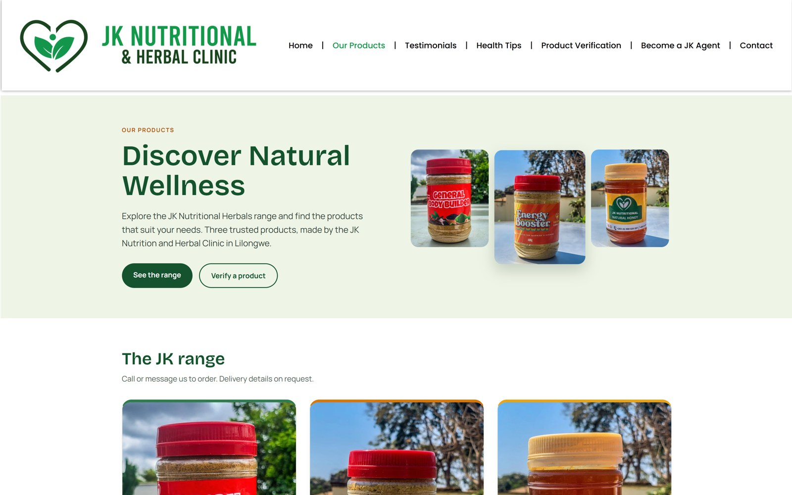

Project Management & Data Professional
I take community projects from idea to donor report, and build the data systems that prove the results.
Three community-led projects, supported by donors and by the communities themselves, delivered in rural Karonga. Now coordinating programmes as Project Officer at Evolve Marketing Consultancy, Lilongwe.
Open to NGO, corporate and public sector roles

About me
Read more →I'm a project management and data professional. I plan and deliver projects, manage budgets and people, and use data to show what's working.
I've done it in rural communities with CorpsAfrica, in research at the UNC Project, and in business at Evolve Marketing Consultancy, where I built the company's CRM and ERP system. The setting changes, but the skills carry over: planning, stakeholders, numbers and systems.
What I bring to any organisation
Field delivery, M&E and digital skills in one person.
Project management
Proposals, budgets, procurement, delivery and final donor reports, including a project supported by FOMA UK.
Monitoring and evaluation
Indicators, baselines and targets, pre and post tests, funds trackers and weekly data logs.
Stakeholders and facilitation
From village heads and committees to an MP and a UK donor, working with every level of a community.
Data and digital
Excel, Power BI, SQL, Kobo and ODK, plus websites and a working CRM built for real clients.
Project work
Community projects, start to finish
At CorpsAfrica/Malawi, I was selected and trained in ABCD, Human-Centered Design and project management, then placed for a year in Simeon, a rural community in Karonga. The role changed with each project: facilitator, trainer or grant manager.

Chitemwano Chicken Farming Project
Problem: seasonal farm income left women and youth unable to cover food, school fees and health care.
What I did: facilitated the community to choose the project, led a pre-mortem, trained the team in proposal writing and M&E, and built the full M&E framework.
Result: a women-led poultry enterprise, supported by CorpsAfrica, the community and the local MP, delivered through four major setbacks.
Read the full case study →
Completing two classrooms at Ighembe Primary School
Problem: learners in unfinished classrooms with no plastered walls, windows or doors.
What I did: wrote the proposal, secured FOMA UK support, mobilised 28% from the community, managed procurement and builders.
Result: finished within budget despite losing the builder mid-way. 335 learners and 17 teachers now use the rooms.
Read the full case study →
Goat pass-on scheme, launched and scaled
Problem: vulnerable youth and women had no productive assets to build income on.
What I did: designed a pass-on model with the club, trained 30 members in goat husbandry and set up the pass-on schedule.
Result: launched, completed and scaled into a second phase. 25 of the 30 beneficiaries are women.
Read the full case study →How I work: ABCD and HCD
Start from what the community already has. Design with the people who will use it.
My work pairs Asset-Based Community-Led Development (ABCD), harnessing a community's existing skills and resources, with Human-Centered Design (HCD) to co-design and test sustainable solutions with the people who will own them.
For project management I use a hybrid approach: phased planning with clear approval gates for donor accountability, adaptive delivery with weekly reviews so plans change when reality does, and community-led decisions throughout.
Understand
Community mapping, one-on-one visits, immersion, focus groups
Define
Innovators' Compass, asset mapping, idea selection matrix, stakeholder mapping
Plan
Pre-mortem risk analysis, proposals and budgets, community action plans
Deliver and learn
Site monitoring, funds tracking, pre and post tests, feedback sessions
Training and facilitation
Trainings that people can measure
More than 20 training topics for five community groups and a primary school, from financial literacy and digital marketing to climate-smart farming and project management for village leaders.
See all trainings and resultsPoultry training, 21 participants
Every participant improved by at least 25 percentage points. Source: my pre and post test dataset.
Digital work
Business systems and websites built for real organisations
I don't just use data tools. I build the systems organisations run on.

Evolve Business Suite
Client: Evolve Marketing Consultancy, a company with six business divisions.
Problem: leads, follow-ups, stock and sales scattered across Excel and WhatsApp, with no business software.
What I built: one secure system combining a CRM for customers and sales with an ERP for stock, invoicing, projects and finance. First version live in two weeks.
See the system →
JK Nutritional and Herbal Clinic website
Client: a herbal products company selling across five Southern African countries.
Problem: a hard-to-use site, and nothing to help customers spot counterfeit products.
What I built: seven rebuilt pages, including a tool where customers check if a product is genuine and a filterable library of health tips.
See the website →